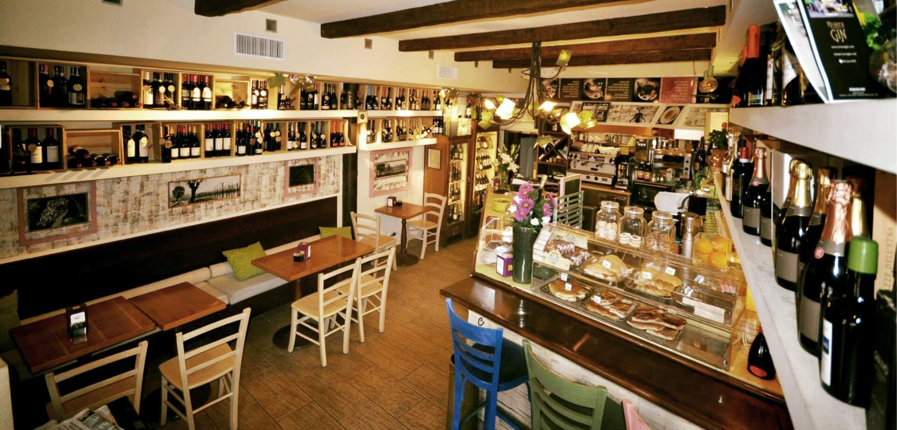
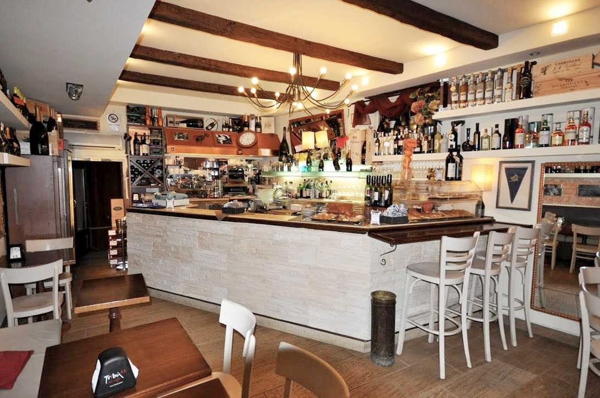
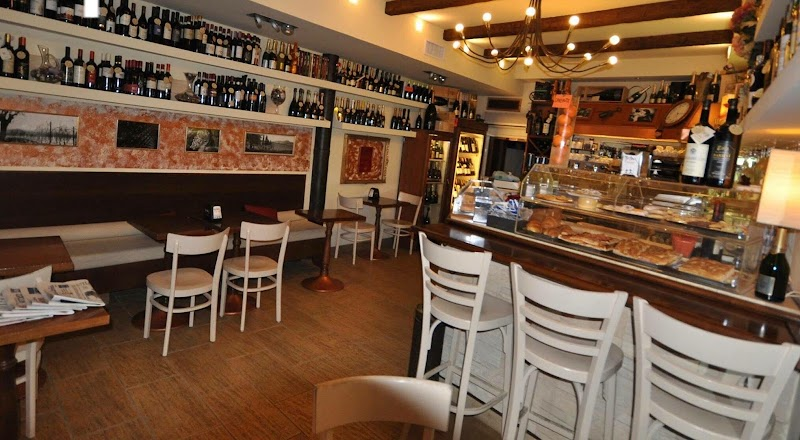
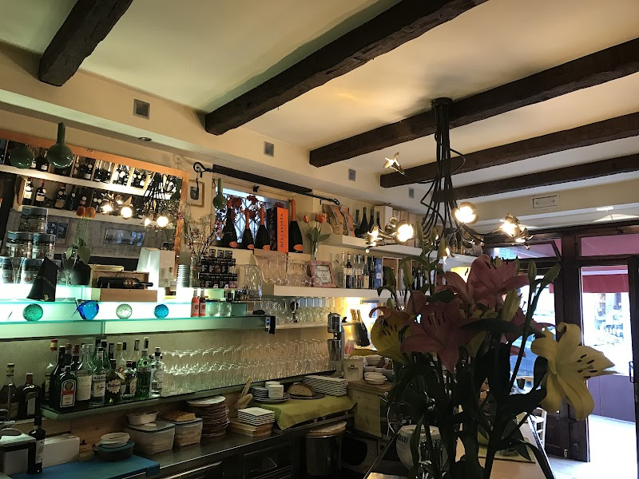
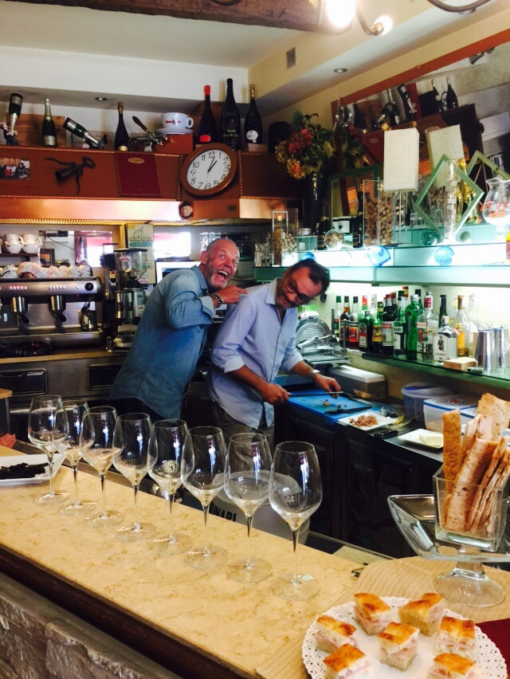
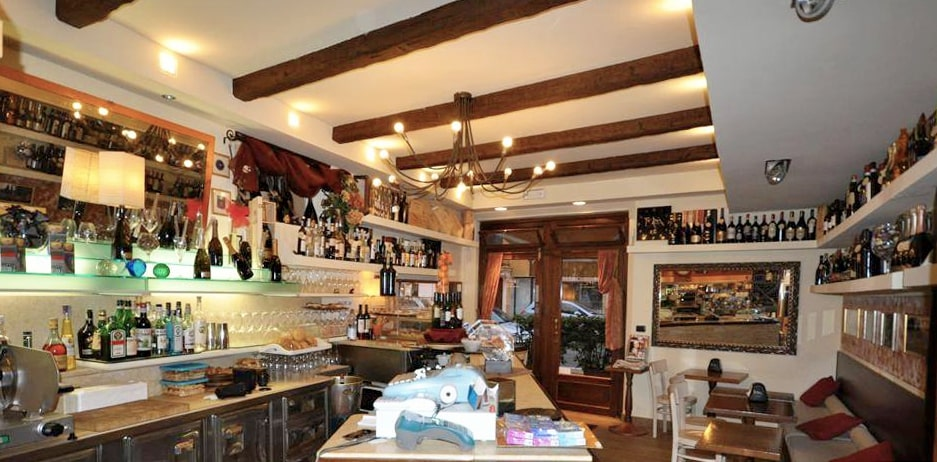
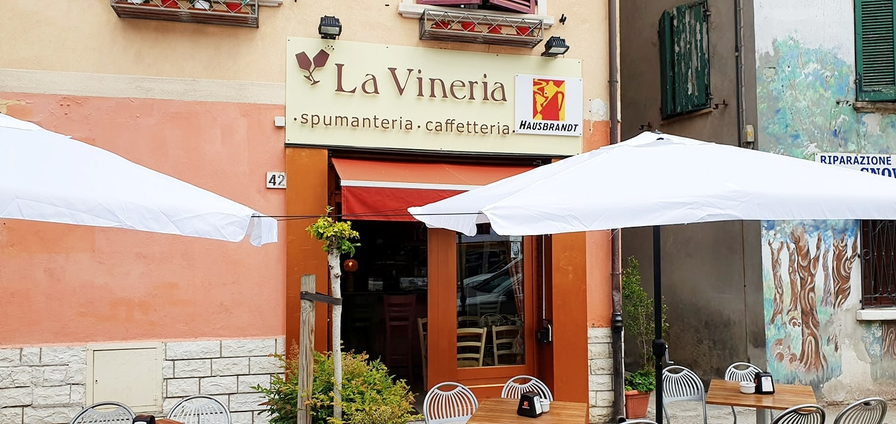
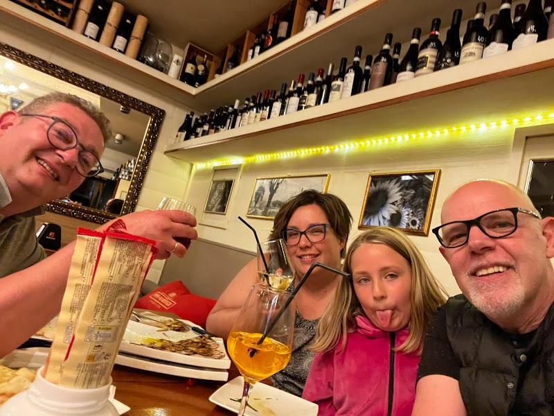
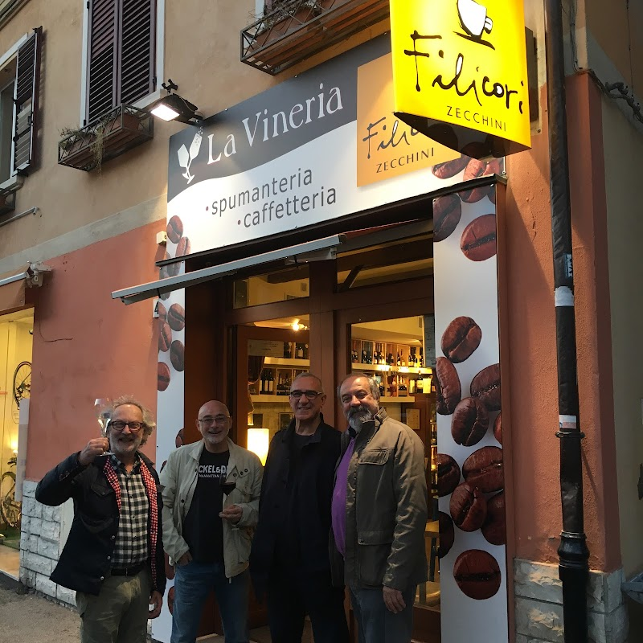
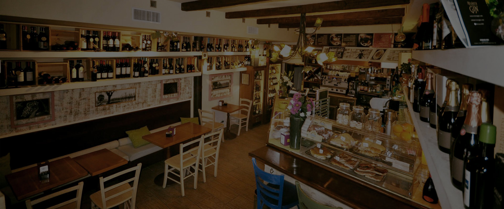

La Vineria
Vineria Viaventi · spumanteria e caffetteria
Un bancone nel centro storico, una cantina scelta bottiglia per bottiglia e l'oste Stefano a fare da guida fra vini e bollicine. Dal caffè del mattino al calice del dopocena.

Un posto dove sentirsi a casa
La Vineria è una manciata di tavoli e un bancone lungo, nel cuore del centro storico di Rimini. Le pareti sono scaffali: bottiglie sopra i divani, bollicine in fresco, distillati in alto. Niente coreografie — si entra, ci si siede al banco, si sceglie insieme.
Dietro il banco c'è Stefano, che il vino te lo racconta prima di versartelo. È lui la differenza fra bere un calice e capirlo: ti chiede cosa ti piace, apre qualcosa che non avevi considerato, e quasi sempre ci prende.
Dal caffè delle sette del mattino al calice di mezzanotte: stesso banco, stessa gente.
Quattro buoni motivi per fermarsi

Vini e bollicine
Etichette del territorio e non solo, al calice o in bottiglia. Chiedi consiglio: è il modo migliore per scoprire qualcosa di nuovo.

Caffetteria
Si apre alle sette. Caffè, cappuccino e la colazione di chi va al lavoro passando dal centro.

Aperitivo e piadina
Piadina, taglieri e qualcosa da accompagnare al calice. Semplice, romagnolo, fatto al momento.

Cocktail e birre
Per chi il vino non lo beve: classici ben fatti, birre e distillati. Nessuno resta col bicchiere vuoto.
Com'è dentro




La bottiglia giusta, senza uscire di casa
Cena a casa, regalo dell'ultimo minuto, brindisi improvvisato. Scrivici cosa ti serve: ti consigliamo l'etichetta e te la portiamo.
Quando siamo aperti
Tutti gli orari
Lunedì 7:00 – 22:00
Martedì 7:00 – 22:00
Mercoledì 7:00 – 22:00
Giovedì 7:00 – 22:00
Venerdì 7:00 – 22:00
Sabato 7:00 – 22:00
Domenica Chiuso